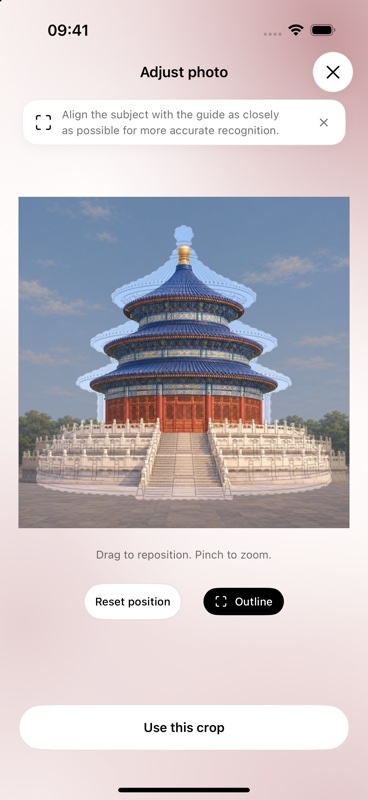
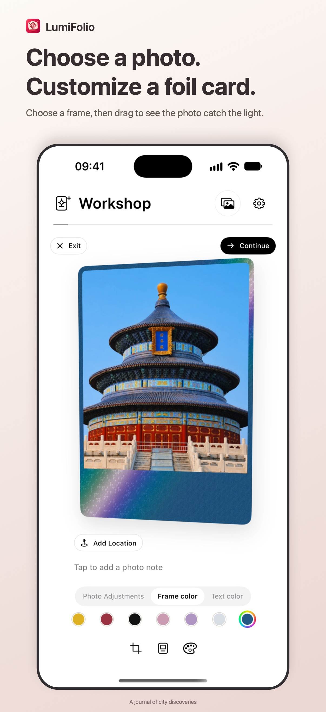
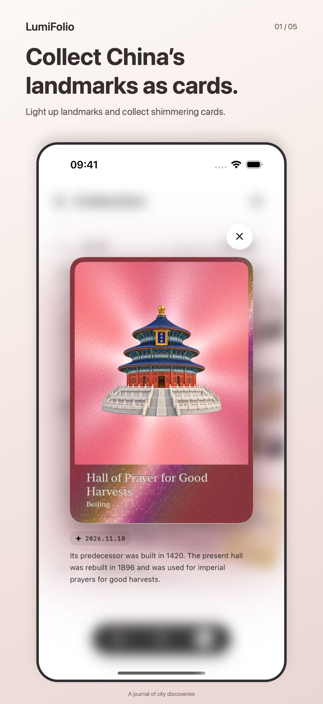
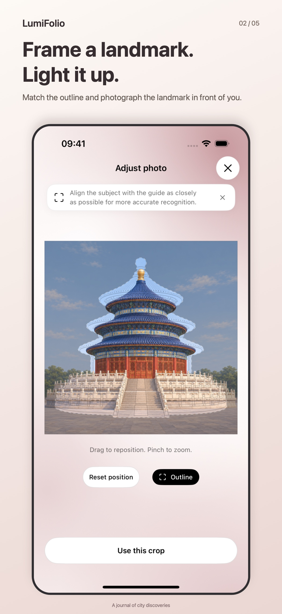
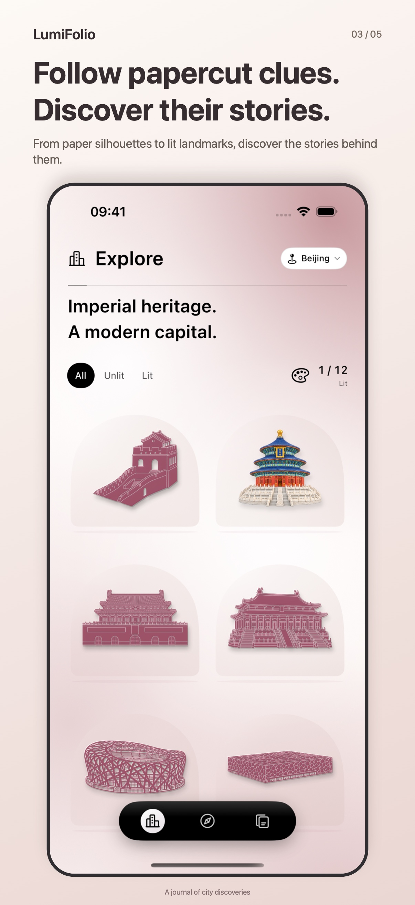
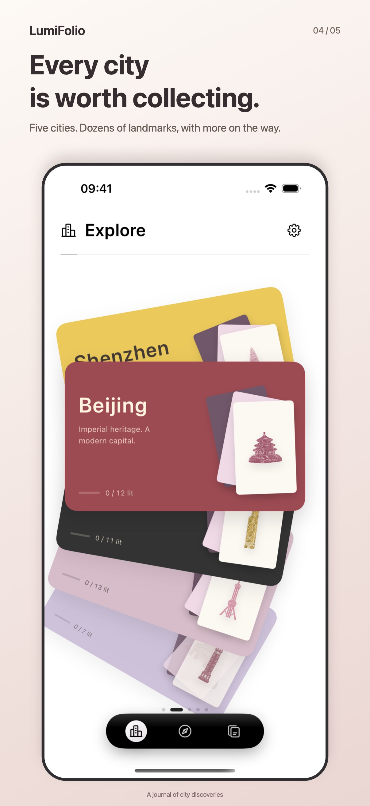
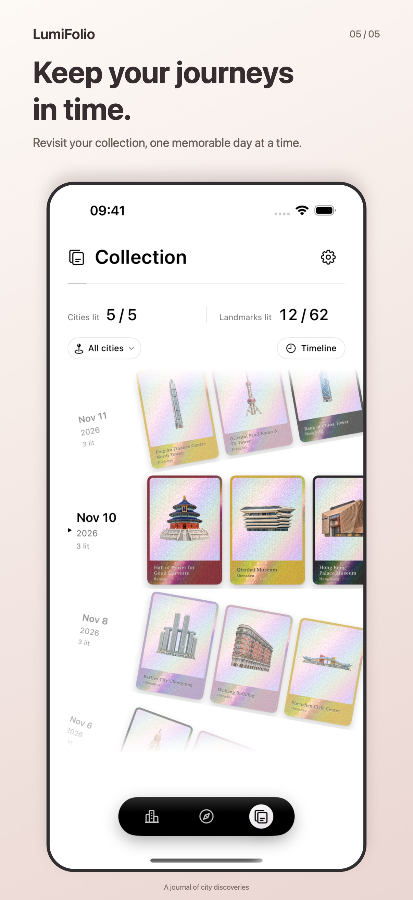

Collect your cityencounters.
A landmark atlas and photo check-in app for exploring China. Frame a landmark, take a photo and light up its card to keep the discoveries you make along the way. Or choose a photo in the Workshop and make a foil card of your own.
Explore the WorkshopCurrently supported: Beijing · Shanghai · Shenzhen · Hong Kong · Chongqing


A little discovery.
A lasting city memory.
From the Temple of Heaven to modern skylines, LumiFolio brings architecture, photos and city memories together through a visual style inspired by Chinese papercut art. Explore at your own pace, whether you love architecture, city photography or collecting cards.
Your photo. Your own foil card.
Turn a photo you love into a shimmering keepsake. Choose your frame, add text and a watermark, then make it part of your collection.
- Customize the frame
- Add text and a watermark
- Keep it in your collection
Export your finished card as a Live Photo and share its changing reflections.
View on the App Store

Frame a landmark. Light it up.
Light up landmarks and collect shimmering cards. See how photos, the atlas and city exploration bring a landmark into your collection. Select an image to see the full screenshot.










Your next encounter starts here.
- 01
Choose a city
Browse landmarks in Beijing, Shanghai, Shenzhen, Hong Kong and Chongqing. Follow silhouettes and clues to find a place you want to explore.
- 02
Capture your discovery
Choose a landmark and take or select a photo for on-device recognition. When nearby, you can also light it up with a location check-in.
- 03
Keep the memory
Collect the landmark, read its cultural note and revisit the date you lit it up. Drag a foil card or tilt your phone to see its reflections.